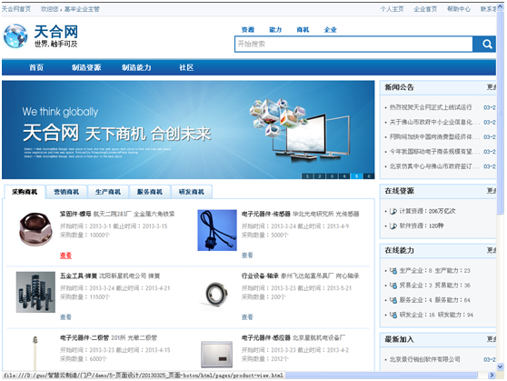
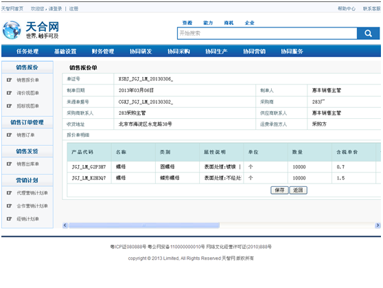

1、在天合网首页在线商机中找到企业所需的商机，点击查看按钮，打开商机详细信息页面；

2、商机详细信息页面，点击“我要回复”按钮，进入协同业务页面。
3、例如：如果是销售商机，直接进入销售报价单，报价后流程自动发到商机发起企业。

4、商机发起企业收到回复后，经过审核确认，需要与该应答企业发生业务协作，系统自动检测是否为商友，如果不是，系统自动弹出“该企业还不是商友，是否立即加为商友”对话框，点击同意，经过审核后，成为商友。在商友列表中可以看到新加入的商友。